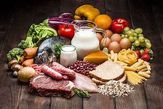
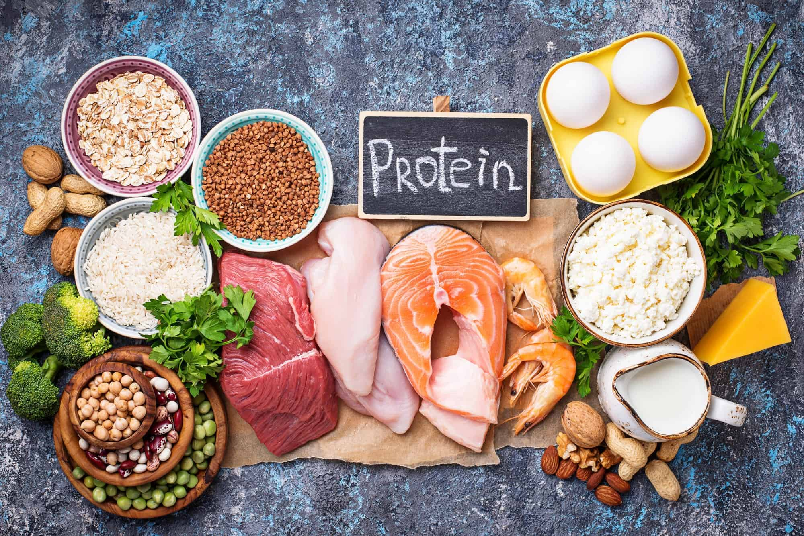

DIET PLAN - 2

Beginner Diet
- breakfast
- lunch
- vegetable soup
- chole
- lentils
- salads
- tortillas(roti)
- dinner
- chicken and tortillas(roti)
- soyabean rice
- vegetable soup
- paneer
- chicken soup

Advance Diet
- breakfast
- spinach sandwich
- mushroom
- omelette
- protein shake
- lunch
- chicken breast
- dalia
- soyachunks
- broccoli
- tofu
- dinner
- protein shake (2 hours before dinner)
- spinach & mushroom
- soyabean rice
- meat or fish
- omelette of egg whites
- lentils or dalia